5 Rethinking: Chapter 4
Geocentric Models
by Richard McElreath, building on the Summaries by Solomon Kurz and Jake Thompson.
5.1 Why normal distributions are normal
5.1.1 Normal by addition
n_people <- 1e3
position <- crossing(person = 1:n_people,
step = 0:16) %>%
mutate(deviation = map_dbl(step, ~if_else(. == 0, 0, runif(1, -1, 1)))) %>%
group_by(person) %>%
mutate(position = cumsum(deviation)) %>%
ungroup()
p_all_steps <- position %>%
ggplot(aes(x = step, y = position, group = person)) +
geom_line(aes(color = person == n_people)) +
geom_point(data = position %>% filter(person == n_people), aes(color = "TRUE"), size = 1) +
geom_vline(data = tibble(step = c(4, 8, 16)),
aes(xintercept = step), linetype = 3, color = rgb(0,0,0,.5)) +
scale_color_manual(values = c(`TRUE` = clr2, `FALSE` = clr_alpha(clr0d, .05)), guide = "none") +
scale_x_continuous(breaks = c(0,4,8,16)) +
theme(panel.grid.major.x = element_blank(),
panel.grid.minor.x = element_blank())
plot_steps <- function(step_nr, data = position, add_ideal = FALSE){
data_step <- data %>%
filter(step == step_nr)
p <- data_step %>%
ggplot(aes(x = position)) +
geom_density(adjust = .2, color = clr0d, fill = fll0) +
scale_x_continuous(limits = c(-6, 6)) +
labs(title = glue("{step_nr} steps"))
if(add_ideal){p <- p +
stat_function(fun = function(x){dnorm(x, mean = 0, sd = sd(data_step$position))},
n = 501, color = clr2, linetype = 3)}
p
}
p_all_steps /
(plot_steps(step_nr = 4) + plot_steps(step_nr = 8) + plot_steps(step_nr = 16, add_ideal = TRUE))
5.2 Normal by multiplication and by log-multiplication
normal_by_multiplication <- function(effect_size = 0.1,
x_scale = ggplot2::scale_x_continuous(),
x_lab = "normal"){
tibble(person = 1:n_people,
growth = replicate(length(person), prod(1 + runif(12, 0, effect_size)))) %>%
ggplot(aes(x = growth)) +
geom_density(color = clr0d, fill = fll0) +
labs(title = glue("effect size: {effect_size}"), x = glue("growth ({x_lab})")) +
x_scale
}
normal_by_multiplication(effect_size = .01) +
normal_by_multiplication(effect_size = .1) +
normal_by_multiplication(effect_size = .5)+
normal_by_multiplication(effect_size = .5, x_scale = scale_x_log10(), x_lab = "log10") +
plot_layout(nrow = 1)
5.2.1 using the Gaussian distribution
- part of the exponential family
- probability density function
- \(\mu\): mean
- \(\sigma\): standard deviation
- \(\tau\): precision
\[ p( y | \mu, \sigma) = \frac{1}{\sqrt{2\pi\sigma^2}} exp \left( \frac{(y-\mu)^2}{2\sigma^2} \right)\\ \tau = 1 / \sigma^2 \\ p( y | \mu, \tau) = \sqrt{\frac{\tau}{2\pi}}exp(-\tfrac{1}{2}\tau(y - \mu)^2) \]
5.3 A language for describing models
*The first line defines the likelihood used in Bayes’ theorem, the other lines describe the priors used. The tilde means that the relationships are **stochastic*.**
re-describing the globe-toss model:
The count \(W\) is distributed binomially with a sample size \(N\) and the probabiliy \(p\). The prior for \(p\) is assumed to be uniform between zero and one
\[ W \sim Binomial(N, p)\\ p \sim Uniform(0, 1) \]
Substituting in Bayes’ theorem:
\[ Pr(p | w, n) = \frac{Binomial(w|n,p)~Uniform(p|0,1)}{\int Binomial(w|n,p)~Uniform(p|0,1) dp} \]
w <- 6
n <- 9
grid_data <- tibble(p_grid = seq(0,1, length.out = 101),
likelihood = dbinom(w, n, p_grid),
prior = dunif(p_grid, 0, 1),
posterior_unstand = likelihood * prior,
posterior = posterior_unstand / sum(posterior_unstand))
grid_data %>%
pivot_longer(cols = c(prior, likelihood, posterior),
names_to = "bayes_part",
values_to = "p") %>%
mutate(bayes_part = factor(bayes_part, levels = names(clr_bayes))) %>%
ggplot(aes(x = p_grid)) +
geom_area(aes(y = p, color = bayes_part, fill = after_scale(clr_alpha(color)))) +
scale_color_manual(values = clr_bayes, guide = "none") +
facet_wrap(bayes_part ~ ., scales = "free_y")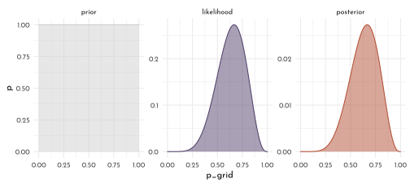
5.3.1 Gaussian model of height
5.3.1.1 The data
library(rethinking)
data(Howell1)
(data <- as_tibble(Howell1)) %>%
precis() %>% as_tibble(rownames = NA) %>% knitr::kable()| mean | sd | 5.5% | 94.5% | histogram | |
|---|---|---|---|---|---|
| height | 138.2635963 | 27.6024476 | 81.108550 | 165.73500 | ▁▁▁▁▁▁▁▂▁▇▇▅▁ |
| weight | 35.6106176 | 14.7191782 | 9.360721 | 54.50289 | ▁▂▃▂▂▂▂▅▇▇▃▂▁ |
| age | 29.3443934 | 20.7468882 | 1.000000 | 66.13500 | ▇▅▅▃▅▂▂▁▁ |
| male | 0.4724265 | 0.4996986 | 0.000000 | 1.00000 | ▇▁▁▁▁▁▁▁▁▇ |
(data_adults <- data %>% filter(age >= 18)) %>%
precis() %>% as_tibble(rownames = NA) %>% knitr::kable()| mean | sd | 5.5% | 94.5% | histogram | |
|---|---|---|---|---|---|
| height | 154.59709 | 7.7423321 | 142.8750 | 167.00500 | ▁▃▇▇▅▇▂▁▁ |
| weight | 44.99049 | 6.4567081 | 35.1375 | 55.76588 | ▁▅▇▇▃▂▁ |
| age | 41.13849 | 15.9678551 | 20.0000 | 70.00000 | ▂▅▇▅▃▇▃▃▂▂▂▁▁▁▁ |
| male | 0.46875 | 0.4997328 | 0.0000 | 1.00000 | ▇▁▁▁▁▁▁▁▁▇ |
data_adults %>%
ggplot(aes(x = height)) +
geom_density(adjust = .5, color = clr0d, fill = fll0) +
scale_x_continuous(limits = c(130,185))
5.3.1.2 The model
\[ \begin{array}{cccr} h_i & \stackrel{iid}{\sim} & Normal(\mu, \sigma) & \textrm{[likelihood]}\\ \mu & \sim & Normal(178, 20) & \textrm{[$\mu$ prior]}\\ \sigma & \sim & Uniform(0,50) & \textrm{[$\sigma$ prior]} \end{array} \]
where, \(iid\) means “independent and identically distributed”.
Prior predictive simulation
(‘what does the model think before seeing the data?’)
n_samples <- 1e4
prior_simulation <- tibble(
sample_mu = rnorm(n_samples, 178, 20),
sample_sigma = runif(n_samples, 0, 50),
prior_h = rnorm(n_samples, sample_mu, sample_sigma),
bad_mu = rnorm(n_samples, 178, 100),
bad_prior = rnorm(n_samples, bad_mu, sample_sigma)
)
p_mu <- ggplot() +
stat_function(fun = function(x){dnorm(x = x, mean = 178, sd = 20)},
xlim = c(100,250), color = clr0d, fill = fll0, geom = "area") +
labs(title = glue("*\U03BC* {mth('\U007E')} dnorm( 178, 20 )"),
y = "density", x = "*\U03BC*")
p_sigma <- ggplot() +
stat_function(fun = function(x){dunif(x = x, min = 0, max = 50)},
xlim = c(-5, 55),
color = clr1, fill = fll1, geom = "area") +
labs(title = glue("*{mth('\U03C3')}* {mth('\U007E')} dunif( 0, 50 )"),
y = "density", x = glue("*{mth('\U03C3')}*"))
p_prior_sim <- prior_simulation %>%
ggplot(aes(x = prior_h)) +
geom_density(color = clr2, fill = fll2, adjust = .4) +
scale_x_continuous(limits = c(0,356), breaks = c(0,73,178,283)) +
labs(title = glue("*h<sub>i</sub>* {mth('\U007E')} dnorm( *\U03BC*, {mth('\U03C3')} )"),
x = "height")
p_bad_prior <- prior_simulation %>%
ggplot(aes(x = bad_prior)) +
geom_density(color = clr2, fill = fll2, adjust = .4) +
scale_x_continuous(limits = c(-222,578),
breaks = c(-128,0,178,484), expand = c(0,0)) +
geom_vline(data = tibble(h = c(0,272)), aes(xintercept = h), linetype = 3)+
labs(title = glue("*h<sub>i</sub>* {mth('\U007E')} dnorm( *\U03BC*, {mth('\U03C3')} )<br>*\U03BC* {mth('\U007E')} dnorm( 178, 100 )"),
x = "height")
p_mu + p_sigma +
p_prior_sim + p_bad_prior &
theme(plot.title = element_markdown(),
axis.title.x = element_markdown())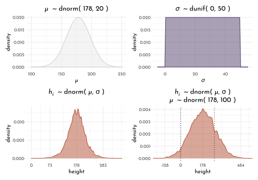
5.3.1.3 grid approximation of the posterior distribution
n_grid <- 101
grid_data <- cross_df(list(mu = seq(from = 152, to = 157, length.out = n_grid),
sigma = seq(from = 6.5, to = 9, length.out = n_grid))) %>%
mutate(log_likelihood = map2_dbl(.x = mu, .y = sigma, .f = function(x, y){
dnorm(x = data_adults$height, mean = x, sd = y, log = TRUE) %>% sum()
}),
prior_mu = dnorm(mu, mean = 178, sd = 20, log = TRUE),
prior_sigma = dunif(sigma, min = 0, max = 50, log = TRUE),
product = log_likelihood + prior_mu + prior_sigma,
probability = exp(product - max(product)))
grid_data %>%
ggplot(aes(x = mu, y = sigma, z = probability)) +
geom_raster(aes(fill = probability)) +
geom_contour(color = rgb(1,1,1,.1)) +
coord_cartesian(xlim = range(grid_data$mu),
ylim = range(grid_data$sigma)) +
scale_fill_gradientn(colours = clr_grd5 %>% clr_alpha(alpha = .8),
limits = c(0,1)) +
coord_cartesian(xlim = range(grid_data$mu),
ylim = range(grid_data$sigma),
expand = 0) +
guides(fill = guide_colorbar(title.position = "top",
barwidth = unit(.9,"npc"),
barheight = unit(5, "pt"))) +
labs(x = " *\U03BC*", y = glue("*{mth('\U03C3')}*"))+
theme(legend.position = "bottom",
axis.title.x = element_markdown(),
axis.title.y = element_markdown())
Sampling from the posterior distribution
n_posterior_sample <- 1e4
samples <- grid_data %>%
slice_sample(n = n_posterior_sample, weight_by = probability, replace = TRUE)
p_samples <- samples %>%
group_by(mu, sigma) %>%
count() %>%
ungroup() %>%
ggplot(aes(x = mu, y = sigma, color = n)) +
geom_point(size = .4) +
scale_color_gradientn(colours = clr_grd5 %>% clr_alpha(alpha = .8)) +
coord_cartesian(xlim = buffer_range(grid_data$mu),
ylim = buffer_range(grid_data$sigma),
expand = 0) +
guides(color = guide_colorbar(title.position = "top",
barwidth = unit(.2,"npc"),
barheight = unit(5, "pt"))) +
labs(x = " *\U03BC*", y = glue("*{mth('\U03C3')}*"))+
theme(legend.position = "bottom",
axis.title.x = element_markdown(),
axis.title.y = element_markdown())
p_mu_dens <- samples %>%
ggplot(aes(x = mu)) +
geom_density(color = clr0d, fill = fll0) +
scale_x_continuous(limits = buffer_range(grid_data$mu), expand = c(0, 0)) +
labs(y = "marginal<br>density") +
theme(axis.title.x = element_blank(),
axis.text.x = element_blank(),
axis.title.y = element_markdown())
p_sigma_dens <- samples %>%
ggplot(aes(x = sigma)) +
geom_density(color = clr0d, fill = fll0) +
scale_x_continuous(limits = buffer_range(grid_data$sigma), expand = c(0, 0)) +
labs(y = "marginal density") +
coord_flip() +
theme(axis.title.y = element_blank(),
axis.text.y = element_blank())
p_mu_dens + patchwork::guide_area() +
p_samples + p_sigma_dens +
plot_layout(guides = "collect", widths = c(1,.3), heights = c(.3,1))
Exploration of long tail for \(\sigma\) when original sample size is small:
heights_subset <- sample(data_adults$height, size = 20)
grid_data_subset <- cross_df(list(mu = seq(from = 145, to = 165, length.out = n_grid),
sigma = seq(from = 4.5, to = 16, length.out = n_grid))) %>%
mutate(log_likelihood = map2_dbl(.x = mu, .y = sigma, .f = function(x, y){
dnorm(x = heights_subset, mean = x, sd = y, log = TRUE) %>% sum()
}),
prior_mu = dnorm(mu, mean = 178, sd = 20, log = TRUE),
prior_sigma = dunif(sigma, min = 0, max = 50, log = TRUE),
product = log_likelihood + prior_mu + prior_sigma,
probability = exp(product - max(product)))
samples_subset <- grid_data_subset %>%
slice_sample(n = n_posterior_sample, weight_by = probability, replace = TRUE)
p_samples <- samples_subset %>%
group_by(mu, sigma) %>%
count() %>%
ungroup() %>%
ggplot(aes(x = mu, y = sigma, color = n)) +
geom_point(size = .4) +
scale_color_gradientn(colours = clr_grd4 %>% clr_alpha(alpha = .8)) +
coord_cartesian(xlim = buffer_range(grid_data_subset$mu),
ylim = buffer_range(grid_data_subset$sigma),
expand = 0) +
guides(color = guide_colorbar(title.position = "top",
barwidth = unit(.2,"npc"),
barheight = unit(5, "pt"))) +
labs(x = " *\U03BC*", y = glue("*{mth('\U03C3')}*"))+
theme(legend.position = "bottom",
axis.title.x = element_markdown(),
axis.title.y = element_markdown())
p_mu_dens <- samples_subset %>%
ggplot(aes(x = mu)) +
geom_density(color = clr0d, fill = fll0) +
scale_x_continuous(limits = buffer_range(grid_data_subset$mu), expand = c(0, 0)) +
labs(y = "marginal<br>density") +
theme(axis.title.x = element_blank(),
axis.text.x = element_blank(),
axis.title.y = element_markdown())
p_sigma_dens <- samples_subset %>%
ggplot(aes(x = sigma)) +
geom_density(color = clr0d, fill = fll0) +
scale_x_continuous(limits = buffer_range(grid_data_subset$sigma), expand = c(0, 0)) +
labs(y = "marginal density") +
coord_flip() +
theme(axis.title.y = element_blank(),
axis.text.y = element_blank())
p_mu_dens + patchwork::guide_area() +
p_samples + p_sigma_dens +
plot_layout(guides = "collect", widths = c(1,.3), heights = c(.3,1))
5.3.1.4 Quadratic approximation of the posterior distribution
\[ \begin{array}{cccr} h_i & \stackrel{iid}{\sim} & Normal(\mu, \sigma) & \verb|height ~ dnorm(mu, sigma)|\\ \mu & \sim & Normal(178, 20) & \verb|mu ~ dnorm(178, 20)|\\ \sigma & \sim & Uniform(0,50) & \verb|sigma ~ dunif(0, 50)| \end{array} \]
model_spec <- alist(
height ~ dnorm(mu, sigma),
mu ~ dnorm(178, 20),
sigma ~ dunif(0, 50)
)
# "maximum a priori estimate"
map_starting_points <- list(
mu = mean(data_adults$height),
sigma = sd(data_adults$height)
)
model_heights_quap_weak_prior <- quap(flist = model_spec,
data = data_adults,
start = map_starting_points)
precis(model_heights_quap_weak_prior) %>%
as_tibble(rownames = NA) %>%
round(digits = 2) %>%
knitr::kable()| mean | sd | 5.5% | 94.5% |
|---|---|---|---|
| 154.61 | 0.41 | 153.95 | 155.27 |
| 7.73 | 0.29 | 7.27 | 8.20 |
Comparing how a stronger prior for \(\mu\) (narrower distribution) forces a larger estimate of \(\sigma\) to compensate for this.
quap(
flist = alist(
height ~ dnorm( mu , sigma ),
mu ~ dnorm( 178, 0.1 ),
sigma ~ dunif( 0, 50 )
),
data = data_adults,
start = map_starting_points) %>%
precis() %>%
as_tibble(rownames = NA) %>%
round(digits = 2) %>%
knitr::kable()| mean | sd | 5.5% | 94.5% |
|---|---|---|---|
| 177.86 | 0.10 | 177.70 | 178.02 |
| 24.52 | 0.93 | 23.03 | 26.00 |
The variance-covariance matrix of the quadratic aprroximation for sampling the multi-dimensional gaussian distribution:
vcov_mod_heights <- vcov(model_heights_quap_weak_prior)
vcov_mod_heights %>%
round(digits = 6) %>%
knitr::kable()| mu | sigma | |
|---|---|---|
| mu | 0.169740 | 0.000218 |
| sigma | 0.000218 | 0.084906 |
diag(vcov_mod_heights)#> mu sigma
#> 0.16973961 0.08490582round(cov2cor(vcov_mod_heights), digits = 5)\[\begin{bmatrix} 1 &0.00182 \\0.00182 &1 \\ \end{bmatrix}\]
sampling from the multi-dimensional posterior distribution
posterior_sample <- extract.samples(model_heights_quap_weak_prior, n = 1e4) %>%
as_tibble()
precis(posterior_sample) %>%
as_tibble() %>%
knitr::kable()| mean | sd | 5.5% | 94.5% | histogram |
|---|---|---|---|---|
| 154.60979 | 0.4156954 | 153.942283 | 155.285157 | ▁▁▁▅▇▂▁▁ |
| 7.73697 | 0.2928449 | 7.273338 | 8.202213 | ▁▁▁▂▅▇▇▃▁▁▁▁ |
5.4 Linear Prediction
ggplot(data_adults,
aes(height, weight)) +
geom_point(shape = 21, size = 1.5, color = clr1, fill = fll1)
\[ \begin{array}{cccr} h_i & {\sim} & Normal(\mu, \sigma) & \textrm{[likelihood]}\\ \mu_i & = & \alpha + \beta (x_i - \bar{x}) & \textrm{[linear model]}\\ % alternatively \overline{x} \alpha & \sim & Normal(178, 20) & \textrm{[$\alpha$ prior]}\\ \beta & \sim & Normal(0, 10) & \textrm{[$\beta$ prior]}\\ \sigma & \sim & Uniform(0,50) & \textrm{[$\sigma$ prior]} \end{array} \]
The current prior for \(\beta\) is a bad choice, because it allows negative as well as unreasonably high and low dependencies of \(h\) (height) on \(x\) (weight):
set.seed(2971)
N <- 100
linear_priors <- tibble(n = 1:N,
alpha = rnorm( n = N, mean = 178, sd = 20 ),
beta_1 = rnorm( n = N, mean = 0, sd = 10),
beta_2 = rlnorm( n = N, mean = 0, sd = 1)) %>%
expand(nesting(n, alpha, beta_1, beta_2), weight = range(data_adults$weight)) %>%
mutate(height_1 = alpha + beta_1 * (weight - mean(data_adults$weight)),
height_2 = alpha + beta_2 * (weight - mean(data_adults$weight)))
p_lin_pr <- ggplot(linear_priors, aes(x = weight, y = height_1, group = n)) +
labs(title = glue("{mth('*\U03B2* ~')} Normal(0, 10)"), y = "height")
p_log_pr <- ggplot(linear_priors, aes(x = weight, y = height_2, group = n)) +
labs(title = glue("{mth('*\U03B2* ~')} Log-Normal(0, 1)"), y = "height")
p_lnorm <- ggplot() +
stat_function(fun = function(x){dlnorm(x = x, meanlog = 0, sdlog = 1)},
xlim = c(0,5), geom = "area", color = clr2, fill = fll2, n = 501) +
labs(title = "Log-Norm(0, 0.1)", y = "density")
(p_lin_pr + p_log_pr &
geom_hline(data = tibble(height = c(0, 272), type = 1:2),
aes(yintercept = height, linetype = factor(type)), size = .4) &
geom_line(color = clr2, alpha = .25) &
scale_linetype_manual(values = c(`1` = 3, `2` = 1), guide = "none") &
coord_cartesian(xlim = range(data_adults$weight), ylim = c(-100, 400)) &
theme(plot.title = element_markdown())) +
p_lnorm
The log-normal prior seems more sensible, so we update the model priors as such:
\[ \begin{array}{cccr} \beta & \sim & Log-Normal(0, 1) & \textrm{[$\beta$ prior]}\\ \end{array} \]
5.4.1 Finding the posterior Distribution
xbar <- mean(data_adults$weight)
model_hight <- quap(
flist = alist(
height ~ dnorm( mu, sigma ),
mu <- alpha + beta * ( weight - xbar ),
alpha ~ dnorm( 178, 20 ),
beta ~ dlnorm( 0, 1 ),
sigma ~ dunif( 0, 50)
),
data = data_adults
)Table of marginal distributions of the parameters after training the model on the data
centered_remember_hw <- precis(model_hight) %>%
round(digits = 3) %>%
as_tibble(rownames = NA)
centered_remember_hw %>%
knitr::kable()| mean | sd | 5.5% | 94.5% | |
|---|---|---|---|---|
| alpha | 154.602 | 0.270 | 154.170 | 155.034 |
| beta | 0.903 | 0.042 | 0.836 | 0.970 |
| sigma | 5.072 | 0.191 | 4.766 | 5.377 |
We also need thevariance-covariance matrix to fully describe the audratic approximation completely:
model_hight %>%
vcov() %>%
round(digits = 2) %>%
as.data.frame(row.names = row.names(.)) %>%
knitr::kable()| alpha | beta | sigma | |
|---|---|---|---|
| alpha | 0.07 | 0 | 0.00 |
| beta | 0.00 | 0 | 0.00 |
| sigma | 0.00 | 0 | 0.04 |
model_hight_smp <- extract.samples(model_hight) %>%
as_tibble()
model_hight_smp_mean <- model_hight_smp %>%
summarise(across(.cols = everything(), mean))
model_hight_smp %>%
ggpairs(
lower = list(continuous = wrap(ggally_points, colour = clr1, size = .2, alpha = .1)),
diag = list(continuous = wrap("densityDiag", fill = fll1, color = clr1, adjust = .5)),
upper = list(continuous = wrap(ggally_cor, size = 5, color = "black", family = "Josefin sans")))
Plotting the posterior distribution against the data
ggplot(data_adults, aes(x = weight, y = height)) +
geom_point(color = clr0d) +
stat_function(fun = function(x){model_hight_smp_mean$alpha + model_hight_smp_mean$beta * (x - xbar)},
color = clr2, n = 2)
A demonstration of the the effect of sample size on the uncertainty of the linear fit
sub_model <- function(N = 10){
data_inner <- data_adults[1:N,]
xbar <- mean(data_inner$weight)
model_hight_inner <- quap(
flist = alist(
height ~ dnorm( mu, sigma ),
mu <- alpha + beta * ( weight - xbar ),
alpha ~ dnorm( 178, 20 ),
beta ~ dlnorm( 0, 1 ),
sigma ~ dunif( 0, 50)
),
data = data_inner
)
model_hight_smp_inner <- extract.samples(model_hight_inner) %>%
as_tibble() %>%
sample_n(20)
ggplot(data_inner, aes(x = weight, y = height)) +
geom_point(color = clr0d) +
(purrr::map(1:20, function(i){stat_function(
fun = function(x){model_hight_smp_inner$alpha[i] + model_hight_smp_inner$beta[i] * (x - xbar)},
color = clr2, n = 2, alpha = .1)})) +
labs(title = glue("N: {N}"))
}
sub_model(10) + sub_model(50) +
sub_model(150) + sub_model(352) 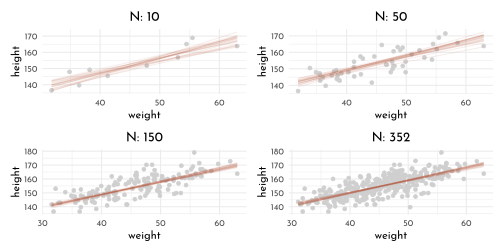
adding intervals
mu_at_50 <- model_hight_smp %>%
mutate(mu_at_50 = alpha + beta * (50 - xbar))
p_density <- mu_at_50 %>%
ggplot(aes(x = mu_at_50)) +
geom_density(adjust = .5, color = clr0d, fill = fll0) +
stat_function(fun = function(x){demp(x, obs = mu_at_50$mu_at_50, density.arg.list = list(adjust = .5))},
xlim = mu_at_50$mu_at_50 %>% PI(), geom = "area", fill = fll2, color = clr2) +
geom_vline(data = tibble(weights = mu_at_50$mu_at_50 %>% PI()), aes(xintercept = weights), linetype = 3)+
scale_x_continuous(glue("{mth('*\U03BC*')} | weight = 50"), limits = c(157.7, 160.8)) +
theme(axis.title.x = element_markdown())
mu_at_50$mu_at_50 %>% PI()#> 5% 94%
#> 158.5857 159.6717weight_seq <- seq(from = 25, to = 70, by = 1)
model_hight_mu <- link(model_hight, data = data.frame(weight = weight_seq)) %>%
as_tibble() %>%
set_names(nm = weight_seq) %>%
pivot_longer(cols = everything(), names_to = "weight", values_to = "height") %>%
mutate(weight = as.numeric(weight))
p_dots <- model_hight_mu %>%
ggplot(aes(x = weight, y = height)) +
geom_point(aes(color = weight == 50), alpha = .1, size = .3) +
scale_color_manual(values = c(`TRUE` = clr2, `FALSE` = clr0d), guide = "none")
model_hight_mu_interval <- model_hight_mu %>%
group_by(weight) %>%
summarise(mean = mean(height),
PI_lower = PI(height)[1],
PI_upper = PI(height)[2]) %>%
ungroup()
p_interval <- model_hight_mu_interval %>%
ggplot(aes(x = weight)) +
geom_point(data = data_adults, aes(y = height), color = clr0, size = .3) +
geom_ribbon(aes(ymin = PI_lower, ymax = PI_upper), fill = clr2, alpha = .35) +
geom_line(aes(y = mean))
p_density + p_dots + p_interval
Prediction intervals
model_hight_sd <- sim(model_hight, data = data.frame(weight = weight_seq), n = 1e4) %>%
as_tibble() %>%
set_names(nm = weight_seq) %>%
pivot_longer(cols = `25`:`70`, names_to = "weight", values_to = "height") %>%
mutate(weight = as.numeric(weight))
model_hight_sd %>%
group_by(weight) %>%
summarise(mean = mean(height),
PI_lower = PI(height)[1],
PI_upper = PI(height)[2]) %>%
ungroup() %>%
ggplot(aes(x = weight)) +
geom_ribbon(aes(ymin = PI_lower, ymax = PI_upper), fill = clr0d, alpha = .35) +
geom_point(data = data_adults, aes(y = height), color = rgb(0,0,0,.5), size = .6) +
geom_ribbon(data = model_hight_mu_interval,
aes(ymin = PI_lower, ymax = PI_upper), fill = clr1, alpha = .35) +
geom_line(data = model_hight_mu_interval,
aes(y = mean))
5.5 Curves from lines
The full data (including kids) is clearly curved in shape:
ggplot(data = data, aes(x = weight, y = height)) +
geom_point(color = clr0d)
We will work on standardized \(x\) values to prevent “numerical glitches” by transforming \(x\) via \(x_s = (\frac{x - \bar{x}}{sd(x)})\):
quadratic polynomial fit \[ \begin{array}{cccr} h_i & {\sim} & Normal(\mu, \sigma) & \textrm{[likelihood]}\\ \mu_i & = & \alpha + \beta_1 x_i + \beta_2 x_i ^ 2& \textrm{[linear model]}\\ % alternatively \overline{x} \alpha & \sim & Normal(178, 20) & \textrm{[$\alpha$ prior]}\\ \beta_1 & \sim & Log-Normal(0, 1) & \textrm{[$\beta_1$ prior]}\\ \beta_2 & \sim & Normal(0, 1) & \textrm{[$\beta_2$ prior]}\\ \sigma & \sim & Uniform(0,50) & \textrm{[$\sigma$ prior]} \end{array} \]
cubic polynomial fit \[ \begin{array}{cccr} h_i & {\sim} & Normal(\mu, \sigma) & \textrm{[likelihood]}\\ \mu_i & = & \alpha + \beta_1 x_i + \beta_2 x_i ^ 2 + \beta_3 x_i ^ 3 & \textrm{[linear model]}\\ % alternatively \overline{x} \alpha & \sim & Normal(178, 20) & \textrm{[$\alpha$ prior]}\\ \beta_1 & \sim & Log-Normal(0, 1) & \textrm{[$\beta_1$ prior]}\\ \beta_2 & \sim & Normal(0, 1) & \textrm{[$\beta_2$ prior]}\\ \beta_3 & \sim & Normal(0, 1) & \textrm{[$\beta_3$ prior]}\\ \sigma & \sim & Uniform(0,50) & \textrm{[$\sigma$ prior]} \end{array} \]
plot_model_intervals <- function(mod, data,
weight_seq = list(weight_s = seq(from = min(data_model$weight_s),
to = max(data_model$weight_s),
length.out = 70))){
model_hight_mu_interval <- link(mod, data = weight_seq) %>%
as_tibble() %>%
set_names(nm = weight_seq$weight_s ) %>%
pivot_longer(cols = everything(), names_to = "weight_s", values_to = "height") %>%
mutate(weight_s = as.numeric(weight_s)) %>%
group_by(weight_s) %>%
summarise(mean = mean(height),
PI_lower = PI(height)[1],
PI_upper = PI(height)[2]) %>%
ungroup()
model_hight_sd <- sim(mod, data = weight_seq, n = 1e4) %>%
as_tibble() %>%
set_names(nm = weight_seq$weight_s) %>%
pivot_longer(cols = everything(), names_to = "weight_s", values_to = "height") %>%
mutate(weight_s = as.numeric(weight_s))
model_hight_sd %>%
group_by(weight_s) %>%
summarise(mean = mean(height),
PI_lower = PI(height)[1],
PI_upper = PI(height)[2]) %>%
ungroup() %>%
ggplot(aes(x = weight_s)) +
geom_ribbon(aes(ymin = PI_lower, ymax = PI_upper), fill = clr0d, alpha = .35) +
geom_point(data = data, aes(y = height), color = rgb(0,0,0,.25), size = .4) +
geom_ribbon(data = model_hight_mu_interval,
aes(ymin = PI_lower, ymax = PI_upper), fill = clr1, alpha = .35) +
geom_line(data = model_hight_mu_interval,
aes(y = mean))
}
data_model <- data %>%
mutate(weight_s = (weight - mean(weight))/sd(weight),
weight_s2 = weight_s ^ 2,
weight_s3 = weight_s ^ 3)
model_hight_s1 <- quap(
flist = alist(
height ~ dnorm( mu, sigma ),
mu <- alpha + beta * weight_s ,
alpha ~ dnorm( 178, 20 ),
beta ~ dlnorm( 0, 1 ),
sigma ~ dunif( 0, 50)
),
data = data_model
)
model_hight_s2 <- quap(
flist = alist(
height ~ dnorm( mu, sigma ),
mu <- alpha + beta1 * weight_s + beta2 * weight_s2,
alpha ~ dnorm( 178, 20 ),
beta1 ~ dlnorm( 0, 1 ),
beta2 ~ dnorm( 0, 1 ),
sigma ~ dunif( 0, 50)
),
data = data_model
)
model_hight_s3 <- quap(
flist = alist(
height ~ dnorm( mu, sigma ),
mu <- alpha + beta1 * weight_s + beta2 * weight_s2 + beta3 * weight_s3,
alpha ~ dnorm( 178, 20 ),
beta1 ~ dlnorm( 0, 1 ),
beta2 ~ dnorm( 0, 1 ),
beta3 ~ dnorm( 0, 1 ),
sigma ~ dunif( 0, 50)
),
data = data_model
)plot_model_intervals(model_hight_s1, data_model) +
plot_model_intervals(model_hight_s2, data_model,
weight_seq = tibble(weight_s = seq(from = min(data_model$weight_s),
to = max(data_model$weight_s),
length.out = 70),
weight_s2 = weight_s ^ 2)) +
plot_model_intervals(model_hight_s3, data_model,
weight_seq = tibble(weight_s = seq(from = min(data_model$weight_s),
to = max(data_model$weight_s),
length.out = 70),
weight_s2 = weight_s ^ 2,
weight_s3 = weight_s ^ 3))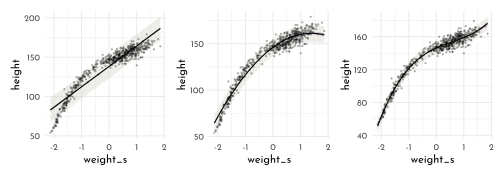
plot_model_intervals(model_hight_s3, data_model,
weight_seq = tibble(weight_s = seq(from = min(data_model$weight_s),
to = max(data_model$weight_s),
length.out = 70),
weight_s2 = weight_s ^ 2,
weight_s3 = weight_s ^ 3)) +
scale_x_continuous("weight [kg]",
breaks = (seq(5,65, length.out = 5) - mean(data_model$weight)) / sd(data_model$weight),
labels = seq(5,65, length.out = 5)) +
labs(y = "height [cm]")
5.6 Splines
Loading the Hanami data (花見), containing the historical dates of first annual cherry tree blossom.
data(cherry_blossoms)
precis(cherry_blossoms) %>% as_tibble() %>% knitr::kable()| mean | sd | 5.5% | 94.5% | histogram |
|---|---|---|---|---|
| 1408.000000 | 350.8845964 | 867.77000 | 1948.23000 | ▇▇▇▇▇▇▇▇▇▇▇▇▁ |
| 104.540508 | 6.4070362 | 94.43000 | 115.00000 | ▁▂▅▇▇▃▁▁ |
| 6.141886 | 0.6636479 | 5.15000 | 7.29470 | ▁▃▅▇▃▂▁▁ |
| 7.185151 | 0.9929206 | 5.89765 | 8.90235 | ▁▂▅▇▇▅▂▂▁▁▁▁▁▁▁ |
| 5.098941 | 0.8503496 | 3.78765 | 6.37000 | ▁▁▁▁▁▁▁▃▅▇▃▂▁▁▁ |
cherry_blossoms %>%
ggplot(aes(x = year, y = doy)) +
geom_point(color = clr2, alpha = .3) +
labs(y = "Day of first blossom")
data_cherry <- cherry_blossoms %>%
filter(complete.cases(doy)) %>%
as_tibble()
n_knots <- 15
knot_list <- quantile(data_cherry$year, probs = seq(0, 1, length.out = n_knots))library(splines)
b_spline_cherry <- bs(data_cherry$year,
knots = knot_list[-c(1, n_knots)],
degree = 3,
intercept = TRUE)
b_spline_tib <- b_spline_cherry %>%
as_tibble() %>%
set_names(nm = str_pad(1:17, width = 2, pad = 0)) %>%
bind_cols(select(data_cherry, year)) %>%
pivot_longer(cols = -year, names_to = "bias_function", values_to = "bias")
ggplot() +
geom_vline(data = tibble(year = knot_list),
aes(xintercept = year),
linetype = 3, color = "black") +
geom_line(data = b_spline_tib, aes(x = year, y = bias,
color = as.numeric(bias_function)
, group = bias_function),
size = 1, alpha = .75) +
scale_color_gradientn(colours = c("black", clr0d, clr2), guide = "none")+
theme(panel.grid.minor.x = element_blank(),
panel.grid.major.x = element_blank())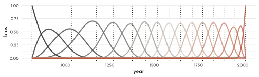
B-spline model:
$$ \[\begin{array}{cccr} D_i & \sim & Normal( \mu_i, \sigma) & \textrm{[likelihood]}\\ \mu_i & = & \alpha + \sum_{k=1}^K w_k B_{k,i} & \textrm{[linear model]}\\ \alpha & \sim & Normal(100, 10) & \textrm{[$\alpha$ prior]}\\ w_i & \sim & Normal(0, 10) & \textrm{[w prior]}\\ \sigma & \sim & Exponential(1) & \textrm{[$\sigma$ prior]} \end{array}\]$$
model_cherry <- quap(
alist(
D ~ dnorm(mu, sigma),
mu <- a + B %*% w,
a ~ dnorm(100, 10),
w ~ dnorm(0, 10),
sigma ~ dexp(1)
),
data = list(D = data_cherry$doy, B = b_spline_cherry),
start = list(w = rep(0, ncol(b_spline_cherry)))
)
precis(model_cherry, depth = 2) %>% round(digits = 2) %>% as_tibble(rownames = NA) %>% knitr::kable()| mean | sd | 5.5% | 94.5% | |
|---|---|---|---|---|
| w[1] | -3.02 | 3.86 | -9.19 | 3.15 |
| w[2] | -0.83 | 3.87 | -7.01 | 5.36 |
| w[3] | -1.06 | 3.58 | -6.79 | 4.67 |
| w[4] | 4.85 | 2.88 | 0.25 | 9.44 |
| w[5] | -0.84 | 2.87 | -5.43 | 3.76 |
| w[6] | 4.32 | 2.91 | -0.33 | 8.98 |
| w[7] | -5.32 | 2.80 | -9.79 | -0.84 |
| w[8] | 7.85 | 2.80 | 3.37 | 12.33 |
| w[9] | -1.00 | 2.88 | -5.61 | 3.60 |
| w[10] | 3.04 | 2.91 | -1.61 | 7.69 |
| w[11] | 4.67 | 2.89 | 0.05 | 9.29 |
| w[12] | -0.15 | 2.87 | -4.74 | 4.43 |
| w[13] | 5.56 | 2.89 | 0.95 | 10.18 |
| w[14] | 0.72 | 3.00 | -4.08 | 5.51 |
| w[15] | -0.80 | 3.29 | -6.06 | 4.46 |
| w[16] | -6.96 | 3.38 | -12.36 | -1.57 |
| w[17] | -7.67 | 3.22 | -12.82 | -2.52 |
| a | 103.35 | 2.37 | 99.56 | 107.13 |
| sigma | 5.88 | 0.14 | 5.65 | 6.11 |
cherry_samples <- extract.samples(model_cherry) %>%
as.data.frame() %>%
as_tibble() %>%
set_names(nm = c("a", "sigma", str_pad(1:17, 2,pad = 0)))
cherry_samples_mu <- cherry_samples %>%
summarise(across(everything(), mean)) %>%
pivot_longer(cols = everything(),
names_to = "bias_function", values_to ="weight")ggplot() +
geom_vline(data = tibble(year = knot_list),
aes(xintercept = year),
linetype = 3, color = "black") +
geom_line(data = b_spline_tib %>% left_join(cherry_samples_mu),
aes(x = year, y = bias * weight,
color = as.numeric(bias_function)
, group = bias_function),
size = 1, alpha = .75) +
scale_color_gradientn(colours = c("black", clr0d, clr2), guide = "none") +
theme(panel.grid.minor.x = element_blank(),
panel.grid.major.x = element_blank())
model_cherry_samples <- link(model_cherry) %>%
as_tibble()%>%
set_names(nm = data_cherry$year) %>%
pivot_longer(cols = everything(), names_to = "year", values_to = "doy") %>%
mutate(year = as.numeric(year)) %>%
arrange(year)
model_cherry_stats <- model_cherry_samples %>%
group_by(year) %>%
nest() %>%
mutate(mean = map_dbl(data, function(data){mean(data$doy)}),
PI_lower = map_dbl(data, function(data){PI(data$doy)[1]}),
PI_upper = map_dbl(data, function(data){PI(data$doy)[2]}))
model_cherry_stats %>%
ggplot(aes(x = year)) +
geom_vline(data = tibble(year = knot_list),
aes(xintercept = year),
linetype = 3, color = "black") +
geom_point(data = cherry_blossoms, aes(y = doy), color = clr2, alpha = .3) +
geom_ribbon(aes(ymin = PI_lower, ymax = PI_upper), fill = clr2, alpha = .35) +
geom_line(aes(y = mean)) +
labs(y = "Day of first blossom") +
theme(panel.grid.minor.x = element_blank(),
panel.grid.major.x = element_blank())
5.7 Homework
E1
\[ \begin{array}{cccr} y_i & \sim & Normal( \mu, \sigma) & \textrm{[likelihood]}\\ \mu & \sim & Normal(0, 10) & \textrm{[$\mu$ prior]}\\ \sigma & \sim & Exponential(1) & \textrm{[$\sigma$ prior]} \end{array} \]
E2
There are two parameters:
- \(\mu\)
- \(\sigma\)
E3
\[ \begin{array}{rcl} Pr( \mu, \sigma | y ) & = & \frac{Normal( y | \mu, \sigma ) Pr(y)}{Pr(\mu, \sigma)} \\ Pr( \mu, \sigma | y ) & = & \frac{\prod_i Pr( y_i | \mu, \sigma) Normal( \mu | 0, 10) Exponential(\sigma | 1) }{ \int\int\prod_i Pr( y_i | \mu, \sigma) Normal( \mu | 0, 10) Exponential(\sigma | 1)d\mu d\sigma} \end{array} \]
E4
\[ \begin{array}{cccr} y_i & \sim & Normal( \mu, \sigma) & \textrm{[likelihood]}\\ \mu_i & = & \alpha + \beta x_i & \textrm{[linear model]}\\ \alpha & \sim & Normal(0, 10) & \textrm{[$\alpha$ prior]}\\ \beta & \sim & Normal(0, 1) & \textrm{[$\beta$ prior]}\\ \sigma & \sim & Exponential(2) & \textrm{[$\sigma$ prior]} \end{array} \]
E5
There are three parameters
- \(\alpha\)
- \(\beta\)
- \(\sigma\)
M1
\[ \begin{array}{cccr} y_i & \sim & Normal( \mu, \sigma) & \textrm{[likelihood]}\\ \mu & \sim & Normal(0, 10) & \textrm{[$\mu$ prior]}\\ \sigma & \sim & Exponential(1) & \textrm{[$\sigma$ prior]} \end{array} \]
Using grid approximation
n <- 5e3
sample_data <- tibble(y = rnorm(n = n, # sample size
mean = rnorm(n = n, mean = 0, sd = 10), # mu prior
sd = rexp(n = n, rate = 1))) # sigma prior
sample_data %>%
ggplot(aes(x = y)) +
geom_density(color = clr0d, fill = fll0) +
stat_function(fun = function(x){dnorm(x = x, mean = 0, sd = 10 )}, geom = "line", linetype = 3, color = clr1) +
scale_x_continuous(limits = c(-50, 50)) +
labs(y = "density")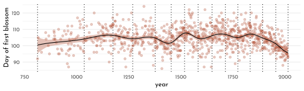
M2
quap_formula <- alist(
y ~ dnorm(mu, sigma), # likelihood
mu ~ dnorm(0, 10), # mu prior
sigma ~ exp(1) # sigma prior
)M3
\[ \begin{array}{cccr} y_i & \sim & Normal( \mu, \sigma) & \textrm{[likelihood]}\\ \mu_i & = & \alpha + \beta x_i & \textrm{[linear model]}\\ \alpha & \sim & Normal(0, 10) & \textrm{[$\alpha$ prior]}\\ \beta & \sim & Uniform(0, 1) & \textrm{[$\beta$ prior]}\\ \sigma & \sim & Exponential(1) & \textrm{[$\sigma$ prior]} \end{array} \]
M4
\[ \begin{array}{cccr} h_i & \sim & Normal( \mu, \sigma) & \textrm{[likelihood]} \\ \mu_i & = & \alpha + \beta h_i & \textrm{[linear model]} \\ \alpha & \sim & Normal(150, 5) & \textrm{[$\alpha$ prior, starting size]} \\ \beta & \sim & Uniform(0, 10) & \textrm{[$\beta$ prior, yearly growth]} \\ \sigma & \sim & Normal(0, 8) & \textrm{[$\sigma$ prior, size variation]} \end{array} \]
M5
No, the chosen prior for \(\beta\) already covers this information: \(\beta \sim Uniform(0, 10)\) is always positive, forcing a positive growth per year.
M6
Limiting the variance of height to 64cm could be done in different ways: by choosing a uniform prior with fixed boundaries [eg. \(Uniform(0,64)\)], or by limiting the variance of an unbound distribution [eg. \(\sigma\) for a normal distribution. 99.7% of the mass is within \(3 \sigma\), so \(Normal(32, 10)\) would do as well].
M7
model_uncentered <- quap(
flist = alist(
height ~ dnorm( mu, sigma ),
mu <- alpha + beta * weight,
alpha ~ dnorm( 178, 20),
beta ~ dlnorm( 0, 1 ),
sigma ~ dunif( 0, 50 )
),
data = data_adults
)
precis(model_uncentered) %>%
round(digits = 3) %>%
as_tibble(rownames = NA) %>%
knitr::kable()| mean | sd | 5.5% | 94.5% | |
|---|---|---|---|---|
| alpha | 114.534 | 1.898 | 111.501 | 117.567 |
| beta | 0.891 | 0.042 | 0.824 | 0.957 |
| sigma | 5.073 | 0.191 | 4.767 | 5.378 |
model_uncentered %>%
vcov() %>%
round(digits = 2) %>%
as.data.frame(row.names = row.names(.)) %>%
knitr::kable()| alpha | beta | sigma | |
|---|---|---|---|
| alpha | 3.60 | -0.08 | 0.01 |
| beta | -0.08 | 0.00 | 0.00 |
| sigma | 0.01 | 0.00 | 0.04 |
compare to the centered version:
centered_remember_hw %>%
knitr::kable()| mean | sd | 5.5% | 94.5% | |
|---|---|---|---|---|
| alpha | 154.602 | 0.270 | 154.170 | 155.034 |
| beta | 0.903 | 0.042 | 0.836 | 0.970 |
| sigma | 5.072 | 0.191 | 4.766 | 5.377 |
model_hight %>%
vcov() %>%
round(digits = 2) %>%
as.data.frame(row.names = row.names(.)) %>%
knitr::kable()| alpha | beta | sigma | |
|---|---|---|---|
| alpha | 0.07 | 0 | 0.00 |
| beta | 0.00 | 0 | 0.00 |
| sigma | 0.00 | 0 | 0.04 |
The un-centered model shows higher covariances between \(\alpha\) and all other parameters.
model_uncentered_mu <- link(model_uncentered, data = data.frame(weight = weight_seq)) %>%
as_tibble() %>%
set_names(nm = weight_seq) %>%
pivot_longer(cols = everything(), names_to = "weight", values_to = "height") %>%
mutate(weight = as.numeric(weight))
model_uncentered_mu_interval <- model_uncentered_mu %>%
group_by(weight) %>%
summarise(mean = mean(height),
PI_lower = PI(height)[1],
PI_upper = PI(height)[2]) %>%
ungroup()
model_uncentered_sd <- sim(model_uncentered, data = data.frame(weight = weight_seq), n = 5e3) %>%
as_tibble() %>%
set_names(nm = weight_seq) %>%
pivot_longer(cols = `25`:`70`, names_to = "weight", values_to = "height") %>%
mutate(weight = as.numeric(weight))
p_1 <- model_uncentered_sd %>%
group_by(weight) %>%
summarise(mean = mean(height),
PI_lower = PI(height)[1],
PI_upper = PI(height)[2]) %>%
ungroup() %>%
ggplot(aes(x = weight)) +
geom_ribbon(aes(ymin = PI_lower, ymax = PI_upper), fill = clr0d, alpha = .35) +
geom_point(data = data_adults, aes(y = height), color = rgb(0,0,0,.5), size = .6) +
geom_ribbon(data = model_uncentered_mu_interval,
aes(ymin = PI_lower, ymax = PI_upper), fill = clr1, alpha = .35) +
geom_line(data = model_uncentered_mu_interval,
aes(y = mean))+
labs(title = " uncentered")
p_2 <- model_hight_sd %>%
group_by(weight) %>%
summarise(mean = mean(height),
PI_lower = PI(height)[1],
PI_upper = PI(height)[2]) %>%
ungroup() %>%
ggplot(aes(x = weight)) +
geom_ribbon(aes(ymin = PI_lower, ymax = PI_upper), fill = clr0d, alpha = .35) +
geom_point(data = data_adults, aes(y = height), color = rgb(0,0,0,.5), size = .6) +
geom_ribbon(data = model_hight_mu_interval,
aes(ymin = PI_lower, ymax = PI_upper), fill = clr1, alpha = .35) +
geom_line(data = model_hight_mu_interval,
aes(y = mean))+
labs(title = " centered")
p_1 + p_2
Hmm 🤔`: I can’t see a difference - maybe that is the point?
M8
spline_check <- function(n_knots = 15, inner = TRUE){
knot_list <- quantile(data_cherry$year, probs = seq(0, 1, length.out = n_knots))
b_spline_cherry <- bs(data_cherry$year,
knots = knot_list[-c(1, n_knots)],
degree = 3,
intercept = TRUE)
b_spline_tib <- b_spline_cherry %>%
as_tibble() %>%
set_names(nm = str_pad(1:(n_knots+2), width = 2, pad = 0)) %>%
bind_cols(select(data_cherry, year)) %>%
pivot_longer(cols = -year, names_to = "bias_function", values_to = "bias")
model_cherry <- quap(
alist(
D ~ dnorm(mu, sigma),
mu <- a + B %*% w,
a ~ dnorm(100, prior_sd_a),
w ~ dnorm(0, prior_sd_w),
sigma ~ dexp(1)
),
data = list(D = data_cherry$doy, B = b_spline_cherry),
start = list(w = rep(0, ncol(b_spline_cherry)))
)
cherry_samples <- extract.samples(model_cherry) %>%
as.data.frame() %>%
as_tibble() %>%
set_names(nm = c("a", "sigma", str_pad(1:(n_knots+2), 2,pad = 0)))
cherry_samples_mu <- cherry_samples %>%
summarise(across(everything(), mean)) %>%
pivot_longer(cols = everything(),
names_to = "bias_function", values_to ="weight")
model_cherry_samples <- link(model_cherry) %>%
as_tibble()%>%
set_names(nm = data_cherry$year) %>%
pivot_longer(cols = everything(), names_to = "year", values_to = "doy") %>%
mutate(year = as.numeric(year)) %>%
arrange(year)
model_cherry_stats <- model_cherry_samples %>%
group_by(year) %>%
nest() %>%
mutate(mean = map_dbl(data, function(data){mean(data$doy)}),
PI_lower = map_dbl(data, function(data){PI(data$doy)[1]}),
PI_upper = map_dbl(data, function(data){PI(data$doy)[2]}))
p_splines_pure <- ggplot() +
geom_vline(data = tibble(year = knot_list),
aes(xintercept = year),
linetype = 3, color = rgb(0,0,0,.5)) +
geom_line(data = b_spline_tib %>% left_join(cherry_samples_mu),
aes(x = year, y = bias * weight,
color = as.numeric(bias_function)
, group = bias_function),
size = .3, alpha = .75) +
scale_color_gradientn(colours = c("black", clr0d, clr1), guide = "none") +
theme(panel.grid.minor.x = element_blank(),
panel.grid.major.x = element_blank(),
axis.title.x = element_blank(),
axis.text.x = element_blank()) +
labs(title = glue("{n_knots} kn, sd a: {prior_sd_a}, sd w: {prior_sd_w}"))
p_splines_fitted <- model_cherry_stats %>%
ggplot(aes(x = year)) +
geom_vline(data = tibble(year = knot_list),
aes(xintercept = year),
linetype = 3, color = rgb(0,0,0,.5)) +
geom_point(data = cherry_blossoms, aes(y = doy), color = clr1, alpha = .1, size = .2) +
geom_ribbon(aes(ymin = PI_lower, ymax = PI_upper), fill = clr1, alpha = .65) +
geom_line(aes(y = mean)) +
labs(y = "Day of first blossom") +
theme(panel.grid.minor.x = element_blank(),
panel.grid.major.x = element_blank(),
axis.title.x = element_blank(),
axis.text.x = element_blank())
if(inner){
p_splines_pure <- p_splines_pure + theme(axis.title.y = element_blank())
p_splines_fitted <- p_splines_fitted + theme(axis.title.y = element_blank())
}
p_splines_pure + p_splines_fitted + plot_layout(ncol = 1, heights = c(.5, 1))
}
set.seed(14)
prior_sd_a = 10
prior_sd_w <- 10
p1 <- spline_check(n_knots = 3, inner = FALSE)
prior_sd_w <- 50
p2 <- spline_check(n_knots = 3, inner = TRUE)
set.seed(42)
prior_sd_w <- 100
p3 <- spline_check(n_knots = 3, inner = TRUE)
p1 | p2 | p3
set.seed(41)
prior_sd_w <- 10
p1 <- spline_check(n_knots = 10, inner = FALSE)
prior_sd_w <- 50
p2 <- spline_check(n_knots = 10, inner = TRUE)
prior_sd_w <- 100
p3 <- spline_check(n_knots = 10, inner = TRUE)
p1 | p2 | p3
set.seed(42)
prior_sd_w <- 10
p1 <- spline_check(n_knots = 30, inner = FALSE)
prior_sd_w <- 50
p2 <- spline_check(n_knots = 30, inner = TRUE)
prior_sd_w <- 100
p3 <- spline_check(n_knots = 30, inner = TRUE)
p1 | p2 | p3
They control the division of data and the initial scale for the weighting
H1
model_hight_smp %>%
mutate(mu_at_50 = alpha + beta * (50 - xbar),
`46.95` = alpha + beta * (46.95 - xbar),
`43.72` = alpha + beta * (43.72 - xbar),
`64.78` = alpha + beta * (64.78 - xbar),
`32.59` = alpha + beta * (32.59 - xbar),
`54.63` = alpha + beta * (54.63 - xbar)) %>%
dplyr::select(`46.95`:`54.63` ) %>%
pivot_longer(cols = everything(), names_to = "weight", values_to = "height") %>%
group_by(weight) %>%
nest() %>%
ungroup() %>%
mutate(median_weight = map_dbl(data, function(x){median(x$height)}),
mean_weight = map_dbl(data, function(x){mean(x$height)}),
lower_89 = map_dbl(data, function(x){PI(x$height)[[1]]}),
upper_89 = map_dbl(data, function(x){PI(x$height)[[2]]}),
individual = 1:5) %>%
dplyr::select(individual, weight,median_weight:upper_89) %>%
mutate(across(everything(), .fns = ~ round(as.numeric(.x), digits = 5))) %>%
knitr::kable()| individual | weight | median_weight | mean_weight | lower_89 | upper_89 |
|---|---|---|---|---|---|
| 1 | 46.95 | 156.3742 | 156.3739 | 155.9302 | 156.8173 |
| 2 | 43.72 | 153.4580 | 153.4585 | 153.0147 | 153.8970 |
| 3 | 64.78 | 172.4641 | 172.4671 | 171.0703 | 173.8520 |
| 4 | 32.59 | 143.4179 | 143.4127 | 142.4567 | 144.3474 |
| 5 | 54.63 | 163.3039 | 163.3058 | 162.5306 | 164.0879 |
H2
data_children <- data %>%
filter(age < 18)
ggplot(data_children,
aes(weight, height)) +
geom_point(shape = 21, size = 1.5, color = clr1, fill = fll1)xbar_children <- mean(data_children$weight)
model_hight_children <- quap(
flist = alist(
height ~ dnorm( mu, sigma ),
mu <- alpha + beta * ( weight - xbar_children ),
alpha ~ dnorm( 178, 20 ),
beta ~ dlnorm( 0, 1 ),
sigma ~ dunif( 0, 50)
),
data = data_children
)
precis(model_hight_children) %>%
round(digits = 3) %>%
as_tibble(rownames = NA)#> # A tibble: 3 x 4
#> mean sd `5.5%` `94.5%`
#> * <dbl> <dbl> <dbl> <dbl>
#> 1 108. 0.609 107. 109.
#> 2 2.72 0.068 2.61 2.83
#> 3 8.44 0.431 7.75 9.13model_hight_children %>%
vcov() %>%
cov2cor() %>%
round(digits = 2) %>%
as.data.frame(row.names = row.names(.)) %>%
knitr::kable()| alpha | beta | sigma | |
|---|---|---|---|
| alpha | 1.00 | 0.00 | 0.01 |
| beta | 0.00 | 1.00 | -0.01 |
| sigma | 0.01 | -0.01 | 1.00 |
model_hight_smp_children <- extract.samples(model_hight_children) %>%
as_tibble()
model_hight_smp_mean_children <- model_hight_smp_children %>%
summarise(across(.cols = everything(), mean))
ggplot(data_children, aes(x = weight, y = height)) +
geom_point(color = clr0d) +
stat_function(fun = function(x){model_hight_smp_mean_children$alpha + model_hight_smp_mean_children$beta * (x - xbar_children)},
color = clr2, n = 2)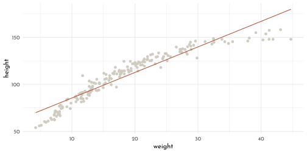
model_hight_smp_mean_children %>%
knitr::kable()| alpha | beta | sigma |
|---|---|---|
| 108.3763 | 2.716742 | 8.44416 |
A child get 27.1674225128912 cm taller per 10 kg weight.
weight_seq_children <- seq(from = 2, to = 45, by = 1)
model_hight_mu_children <- link(model_hight_children, data = data.frame(weight = weight_seq_children)) %>%
as_tibble() %>%
set_names(nm = weight_seq_children) %>%
pivot_longer(cols = everything(), names_to = "weight", values_to = "height") %>%
mutate(weight = as.numeric(weight))
model_hight_mu_interval_children <- model_hight_mu_children %>%
group_by(weight) %>%
summarise(mean = mean(height),
PI_lower = PI(height)[1],
PI_upper = PI(height)[2]) %>%
ungroup()
model_hight_sd_children <- sim(model_hight_children, data = data.frame(weight = weight_seq_children), n = 1e4) %>%
as_tibble() %>%
set_names(nm = weight_seq_children) %>%
pivot_longer(cols = `2`:`45`, names_to = "weight", values_to = "height") %>%
mutate(weight = as.numeric(weight))
model_hight_sd_children %>%
group_by(weight) %>%
summarise(mean = mean(height),
PI_lower = PI(height)[1],
PI_upper = PI(height)[2]) %>%
ungroup() %>%
ggplot(aes(x = weight)) +
geom_ribbon(aes(ymin = PI_lower, ymax = PI_upper), fill = clr0d, alpha = .35) +
geom_point(data = data_children, aes(y = height), color = rgb(0,0,0,.5), size = .6) +
geom_ribbon(data = model_hight_mu_interval_children,
aes(ymin = PI_lower, ymax = PI_upper), fill = clr1, alpha = .35) +
geom_line(data = model_hight_mu_interval_children,
aes(y = mean))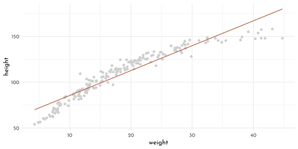
The model seems to be systematically overestimate the height for the more extreme weights (very light and rather heavy). The relationship does not appear to be linear in the first place, so a non-lnear fit would be better - ideally one that is biologically motivated.
H3
data_log <- data %>%
mutate(weight_log = log10(weight))
xbar_log <- mean(data_log$weight_log)
model_hight_log <- quap(
flist = alist(
height ~ dnorm( mu, sigma ),
mu <- alpha + beta * ( weight_log - xbar_log ),
alpha ~ dnorm( 179, 20 ),
beta ~ dlnorm( 0, 1 ),
sigma ~ dunif( 0, 50)
),
data = data_log
)
precis(model_hight_log) %>%
round(digits = 3) %>%
as_tibble(rownames = NA)#> # A tibble: 3 x 4
#> mean sd `5.5%` `94.5%`
#> * <dbl> <dbl> <dbl> <dbl>
#> 1 138. 0.22 138. 139.
#> 2 108. 0.881 107. 110.
#> 3 5.14 0.156 4.89 5.38model_hight_log %>%
vcov() %>%
cov2cor() %>%
round(digits = 2) %>%
as.data.frame(row.names = row.names(.)) %>%
knitr::kable()| alpha | beta | sigma | |
|---|---|---|---|
| alpha | 1 | 0 | 0 |
| beta | 0 | 1 | 0 |
| sigma | 0 | 0 | 1 |
model_hight_smp_log <- extract.samples(model_hight_log) %>%
as_tibble()
model_hight_smp_mean_log <- model_hight_smp_log %>%
summarise(across(.cols = everything(), mean))
ggplot(data_log, aes(x = weight_log, y = height)) +
geom_point(color = clr0d) +
stat_function(fun = function(x){model_hight_smp_mean_log$alpha + model_hight_smp_mean_log$beta * (x - xbar_log)},
color = clr2, n = 2)
weight_seq_log <- log10(seq(from = 2, to = 70, by = 1))
model_hight_mu_log <- link(model_hight_log, data = data.frame(weight_log = weight_seq_log)) %>%
as_tibble() %>%
set_names(nm = weight_seq_log) %>%
pivot_longer(cols = everything(), names_to = "weight_log", values_to = "height") %>%
mutate(weight_log = as.numeric(weight_log))
model_hight_mu_interval_log <- model_hight_mu_log %>%
group_by(weight_log) %>%
summarise(mean = mean(height),
PI_lower = PI(height, prob = .97)[1],
PI_upper = PI(height, prob = .97)[2]) %>%
ungroup()
model_hight_sd_log <- sim(model_hight_log, data = data.frame(weight_log = weight_seq_log), n = 1e4) %>%
as_tibble() %>%
set_names(nm = weight_seq_log) %>%
pivot_longer(cols = everything(), names_to = "weight_log", values_to = "height") %>%
mutate(weight_log = as.numeric(weight_log))
model_hight_sd_log %>%
group_by(weight_log) %>%
summarise(mean = mean(height),
PI_lower = PI(height, prob = .97)[1],
PI_upper = PI(height, prob = .97)[2]) %>%
ungroup() %>%
ggplot(aes(x = 10^(weight_log))) +
geom_ribbon(aes(ymin = PI_lower, ymax = PI_upper), fill = clr0d, alpha = .35) +
geom_point(data = data, aes(x = weight, y = height), color = rgb(0,0,0,.5), size = .6) +
geom_ribbon(data = model_hight_mu_interval_log,
aes(ymin = PI_lower, ymax = PI_upper), fill = clr1, alpha = .35) +
geom_line(data = model_hight_mu_interval_log,
aes(y = mean), linetype = 3)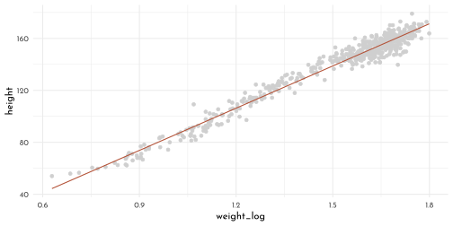
H4
N <- 25
cubic_priors <- tibble(n = 1:N,
alpha = rnorm( n = N, mean = -128, sd = 20 ),
beta_1 = rnorm( n = N, mean = 11, sd = .1),
beta_2 = rnorm( n = N, mean = -.1, sd = .01)) %>%
expand(nesting(n, alpha, beta_1, beta_2),
weight = range(data_adults$weight)) %>%
mutate(height = alpha +
beta_1 * (weight - mean(data_adults$weight)) +
beta_2 * (weight - mean(data_adults$weight))^2)
ggplot(cubic_priors, aes(x = weight, y = height, group = n)) +
pmap(cubic_priors, function(alpha, beta_1, beta_2, ...){
stat_function(fun = function(x){alpha + beta_1 * x + beta_2 * x^2},
color = fll1, alpha = .1,
n = 100, lwd = .2, geom = "line")
}) +
geom_hline(data = tibble(height = c(0, 272), type = 1:2),
aes(yintercept = height, linetype = factor(type)), size = .4) +
scale_linetype_manual(values = c(`1` = 3, `2` = 1), guide = "none") +
coord_cartesian(xlim = range(data_adults$weight), ylim = c(-100, 400)) +
theme(plot.title = element_markdown())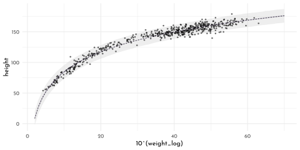
H5
cherry_blossoms_tib <- cherry_blossoms %>%
as_tibble() %>%
filter(!is.na(temp) & !is.na(doy)) %>%
mutate(temp_s = (temp - mean(temp, na.rm = TRUE))/sd(temp, na.rm = TRUE))
temp_bar <- mean(cherry_blossoms_tib$temp, na.rm = TRUE)
temp_sd <- sd(cherry_blossoms_tib$temp, na.rm = TRUE)
cherry_blossoms_tib %>%
as_tibble() %>%
ggplot(aes(x = temp, y = doy)) +
geom_point(size = 1.2, color = fll2)
\[ \begin{array}{cccr} d_i & \sim & Normal( \mu, \sigma) & \textrm{[likelihood]}\\ \mu_i & = & \alpha + \beta x_i & \textrm{[linear model]}\\ \alpha & \sim & Normal(105, 10) & \textrm{[$\alpha$ prior]}\\ \beta & \sim & Normal(0, 10) & \textrm{[$\beta$ prior]}\\ \sigma & \sim & Exponential(1) & \textrm{[$\sigma$ prior]} \end{array} \]
model_temp <- quap(
flist = alist(
doy ~ dnorm( mu, sigma ),
mu <- alpha + beta * temp_s,
alpha ~ dnorm( 105, 10 ),
beta ~ dnorm( 0, 10 ),
sigma ~ dexp( 1 )
),
data = cherry_blossoms_tib
)
temp_seq <- (seq(from = 4.5, to = 8.4, by = .1) - temp_bar) / temp_sd
model_temp_mu <- link(model_temp, data = data.frame(temp_s = temp_seq)) %>%
as_tibble() %>%
set_names(nm = temp_seq) %>%
pivot_longer(cols = everything(), names_to = "temp_s", values_to = "doy") %>%
mutate(temp_s = as.numeric(temp_s),
temp = temp_s * temp_sd + temp_bar)
model_temp_mu_interval <- model_temp_mu %>%
group_by(temp) %>%
summarise(mean = mean(doy),
PI_lower = PI(doy)[1],
PI_upper = PI(doy)[2]) %>%
ungroup()
model_temp_sd <- sim(model_temp, data = data.frame(temp_s = temp_seq), n = 1e4) %>%
as_tibble() %>%
set_names(nm = temp_seq) %>%
pivot_longer(cols = everything(), names_to = "temp_s", values_to = "doy") %>%
mutate(temp_s = as.numeric(temp_s),
temp = temp_s * temp_sd + temp_bar)
model_temp_sd %>%
group_by(temp) %>%
summarise(mean = mean(doy),
PI_lower = PI(doy)[1],
PI_upper = PI(doy)[2]) %>%
ungroup() %>%
ggplot(aes(x = temp)) +
geom_ribbon(aes(ymin = PI_lower, ymax = PI_upper), fill = clr0d, alpha = .35) +
geom_point(data = cherry_blossoms_tib, aes(y = doy), color = rgb(0,0,0,.5), size = .6) +
geom_ribbon(data = model_temp_mu_interval,
aes(ymin = PI_lower, ymax = PI_upper), fill = clr1, alpha = .35) +
geom_line(data = model_temp_mu_interval,
aes(y = mean))
H6
n_knots <- 15
knot_list <- quantile(data_cherry$year, probs = seq(0, 1, length.out = n_knots))
b_spline_cherry <- bs(data_cherry$year,
knots = knot_list[-c(1, n_knots)],
degree = 3,
intercept = TRUE)
prior_predictive <- function(n = 100, prior_w = function(knots){rnorm(n = knots + 2, 0, 10)}){
tibble(.draw = 1:n,
alpha = rnorm(n, 100, 10),
w = purrr::map(seq_len(n), # random weighting of knots
function(x, knots){
w <- prior_w(knots)
w
},
knots = n_knots)) %>%
mutate(mu = purrr::map2(alpha, w, .f = function(alpha, w, b){
mu <- alpha + b %*% w
mu %>%
as_tibble(.name_repair = ~"mu") %>%
mutate(year = data_cherry$year, .before = 1)
}, b = b_spline_cherry)) %>%
unnest(cols = mu)
}
p1 <- prior_predictive(n = 50) %>%
ggplot(aes(x = year, y = mu)) +
labs(title = "weight sd: 10")
p2 <- prior_predictive(n = 50, prior_w = function(knots){rnorm(n = knots + 2, mean = 0, sd = .3)}) %>%
ggplot(aes(x = year, y = mu)) +
labs(title = "weight sd: 0.3")
p1 + p2 &
geom_vline(data = tibble(year = knot_list),
aes(xintercept = year),
linetype = 3, color = "black") &
geom_line(aes(group = .draw, color = .draw), alpha = .2) &
scale_color_gradientn(colours = c("black", clr0d, clr2), guide = "none") &
theme(panel.grid.minor.x = element_blank(),
panel.grid.major.x = element_blank())
H7
This one is missing…
H8
set.seed(42)
model_cherry2 <- quap(
alist(
D ~ dnorm(mu, sigma),
mu <- B %*% w,
w ~ dnorm(0, 10),
sigma ~ dexp(1)
),
data = list(D = data_cherry$doy, B = b_spline_cherry),
start = list(w = rep(0, ncol(b_spline_cherry))),
control = list(maxit = 5000)
)
precis(model_cherry2, depth = 2) %>% round(digits = 2) %>% as_tibble(rownames = NA) %>% knitr::kable()| mean | sd | 5.5% | 94.5% | |
|---|---|---|---|---|
| w[1] | 92.84 | 3.22 | 87.69 | 97.98 |
| w[2] | 102.76 | 3.09 | 97.83 | 107.69 |
| w[3] | 100.43 | 2.75 | 96.03 | 104.83 |
| w[4] | 108.34 | 1.64 | 105.71 | 110.96 |
| w[5] | 101.56 | 1.68 | 98.88 | 104.24 |
| w[6] | 106.97 | 1.74 | 104.19 | 109.75 |
| w[7] | 97.56 | 1.53 | 95.12 | 99.99 |
| w[8] | 110.64 | 1.53 | 108.19 | 113.08 |
| w[9] | 101.68 | 1.68 | 99.00 | 104.36 |
| w[10] | 105.75 | 1.73 | 102.99 | 108.52 |
| w[11] | 107.37 | 1.70 | 104.66 | 110.08 |
| w[12] | 102.67 | 1.65 | 100.02 | 105.31 |
| w[13] | 108.15 | 1.69 | 105.44 | 110.86 |
| w[14] | 103.77 | 1.87 | 100.78 | 106.75 |
| w[15] | 101.31 | 2.34 | 97.57 | 105.05 |
| w[16] | 95.98 | 2.44 | 92.08 | 99.87 |
| w[17] | 92.12 | 2.30 | 88.45 | 95.80 |
| sigma | 5.95 | 0.15 | 5.71 | 6.18 |
cherry_samples <- extract.samples(model_cherry2) %>%
as.data.frame() %>%
as_tibble() %>%
set_names(nm = c("sigma", str_pad(1:17, 2,pad = 0)))
cherry_samples_mu <- cherry_samples %>%
summarise(across(everything(), mean)) %>%
pivot_longer(cols = everything(),
names_to = "bias_function", values_to ="weight")
model_cherry_samples <- link(model_cherry2) %>%
as_tibble()%>%
set_names(nm = data_cherry$year) %>%
pivot_longer(cols = everything(), names_to = "year", values_to = "doy") %>%
mutate(year = as.numeric(year)) %>%
arrange(year)
model_cherry_stats <- model_cherry_samples %>%
group_by(year) %>%
nest() %>%
mutate(mean = map_dbl(data, function(data){mean(data$doy)}),
PI_lower = map_dbl(data, function(data){PI(data$doy)[1]}),
PI_upper = map_dbl(data, function(data){PI(data$doy)[2]}))
model_cherry_stats %>%
ggplot(aes(x = year)) +
geom_vline(data = tibble(year = knot_list),
aes(xintercept = year),
linetype = 3, color = "black") +
geom_point(data = cherry_blossoms, aes(y = doy), color = clr2, alpha = .3) +
geom_ribbon(aes(ymin = PI_lower, ymax = PI_upper), fill = clr2, alpha = .35) +
geom_line(aes(y = mean)) +
labs(y = "Day of first blossom") +
theme(panel.grid.minor.x = element_blank(),
panel.grid.major.x = element_blank())
5.8 {brms} section
5.8.1 linear model of adult height
finding the posterior with {brms}
brms_c4_adult_heights <- brm(data = data_adults,
family = gaussian,
height ~ 1,
prior = c(prior(normal(178, 20), class = Intercept),
prior(uniform(0, 50), class = sigma)),
iter = 31000,
warmup = 30000,
chains = 7,
cores = 7,
seed = 4,
file = "brms/brms_c4_adult_heights")
posterior_summary(brms_c4_adult_heights,probs = c(.055, .945)) %>%
round(digits = 3) %>%
knitr::kable()| Estimate | Est.Error | Q5.5 | Q94.5 | |
|---|---|---|---|---|
| b_Intercept | 154.604 | 0.418 | 153.947 | 155.275 |
| sigma | 7.742 | 0.304 | 7.276 | 8.250 |
| lp__ | -1226.924 | 1.058 | -1228.772 | -1225.927 |
brms_summary_plot <- function(mod, n_chains = 4){
bayes_data <- bayesplot::mcmc_areas_data(mod, prob = .95) %>%
filter(parameter != "lp__")
bayes_chains_data <- bayesplot::mcmc_trace_data(mod) %>%
filter(parameter != "lp__")
p_dens <- bayes_data %>%
filter(interval == "outer") %>%
ggplot(aes(x = x, y = scaled_density)) +
geom_area(color = clr0d, fill = fll0) +
geom_area(data = bayes_data %>%
filter(interval == "inner"), color = clr2, fill = fll2) +
facet_wrap(parameter ~ . , scales = "free", ncol = 1)
p_chains <- bayes_chains_data %>%
ggplot(aes(x = iteration, y = value, group = chain)) +
geom_line(aes(color = chain), alpha = .6) +
facet_wrap(parameter ~ . , scales = "free", ncol = 1) +
scale_color_manual(values = scales::colour_ramp(colors = c("black",clr0d,clr2))(seq(0,1,length.out = n_chains)))
p_dens + p_chains
}
brms_summary_plot(brms_c4_adult_heights)
sampling from the posterior
# equivalent to `rethinking::extract.samples()`
brms_post <- as_draws_df(brms_c4_adult_heights) %>%
as_tibble()
head(brms_post)#> # A tibble: 6 x 6
#> b_Intercept sigma lp__ .chain .iteration .draw
#> <dbl> <dbl> <dbl> <int> <int> <int>
#> 1 154. 8.07 -1227. 1 1 1
#> 2 154. 7.84 -1227. 1 2 2
#> 3 155. 8.21 -1228. 1 3 3
#> 4 154. 7.99 -1227. 1 4 4
#> 5 155. 7.77 -1226. 1 5 5
#> 6 154. 7.93 -1227. 1 6 6select(brms_post, b_Intercept:sigma) %>%
cov() %>%
cov2cor()\[\begin{bmatrix} 1 &-0.0192241582730429 \\-0.0192241582730429 &1 \\ \end{bmatrix}\]
brms_post %>%
dplyr::select(-(lp__:.draw)) %>%
pivot_longer(cols = everything()) %>%
group_by(name) %>%
summarise(quantiles = list(tibble(quant = quantile(value, probs = c(.5, .025, .75)),
perc = str_c("q",names(quant)))) )%>%
unnest(quantiles) %>%
pivot_wider(names_from = perc, values_from = quant) %>%
mutate(across(.cols = -name, ~ round(.x, digits = 2))) %>%
knitr::kable()| name | q50% | q2.5% | q75% |
|---|---|---|---|
| b_Intercept | 154.59 | 153.80 | 154.89 |
| sigma | 7.73 | 7.18 | 7.94 |
posterior_summary(brms_post)\[\begin{bmatrix} 154.603681717344 &0.417698657902289 &153.797143321477 &155.411872045528 &7.7417412324536 &0.304409842943225 \\7.17548730321122 &8.38470302045445 &-1226.92435306886 &1.05809371424477 &-1229.68670608237 &-1225.89312495532 \\2.5 &1.11817376920787 &1 &4 &500.5 &288.711081398222 \\25.975 &975.025 &2000.5 &1154.84486692658 &100.975 &3900.025 \\ \end{bmatrix}\]
the height model with a predictor
data_adults <- data_adults %>%
mutate(weight_centered = weight - mean(weight))
brms_c4_heights_x <- brm(data = data_adults,
family = gaussian,
height ~ 1 + weight_centered,
prior = c(prior(normal(178, 20), class = Intercept),
prior(lognormal(0, 1), class = b),
prior(uniform(0, 50), class = sigma)),
iter = 28000, warmup = 27000,
chains = 7, cores = 7,
seed = 42,
file = "brms/brms_c4_heights_x")
brms_summary_plot(brms_c4_heights_x, n_chains = 12)
Logs and exps (m4.3b)
brms_c4_heights_x_log <- brm(data = data_adults,
family = gaussian,
bf(height ~ alpha + exp(logbeta) * weight_centered,
alpha ~ 1,
logbeta ~ 1,
nl = TRUE),
prior = c(prior(normal(178, 20), class = b, nlpar = alpha),
prior(normal(0, 1), class = b, nlpar = logbeta),
prior(uniform(0, 50), class = sigma)),
iter = 31000, warmup = 30000,
chains = 7, cores = 7,
seed = 42,
file = "brms/brms_c4_heights_x_log")posterior_summary(brms_c4_heights_x)[1:3, ] %>%
round(digits = 2)%>%
as.data.frame()#> Estimate Est.Error Q2.5 Q97.5
#> b_Intercept 154.60 0.27 154.08 155.12
#> b_weight_centered 0.90 0.04 0.82 0.99
#> sigma 5.11 0.20 4.74 5.52vcov(brms_c4_heights_x) %>%
cov2cor() %>%
round(3) %>%
as.data.frame()#> Intercept weight_centered
#> Intercept 1.000 -0.003
#> weight_centered -0.003 1.000brms_posterior_samples <- as_draws_df(brms_c4_heights_x) %>%
as_tibble() %>%
select(-(lp__:.draw))
brms_posterior_samples %>%
cov() %>%
cov2cor() %>%
round(digits = 3)%>%
as.data.frame()#> b_Intercept b_weight_centered sigma
#> b_Intercept 1.000 -0.003 0.006
#> b_weight_centered -0.003 1.000 0.000
#> sigma 0.006 0.000 1.000ggpairs(brms_posterior_samples,
lower = list(continuous = wrap(ggally_points, colour = clr1, size = .3, alpha = .1)),
diag = list(continuous = wrap("densityDiag", fill = fll1, color = clr1, adjust = .5)),
upper = list(continuous = wrap(ggally_cor, size = 5, color = "black", family = "Josefin sans")))
weight_seq <- tibble(weight = 25:70) %>%
mutate(weight_centered = weight - mean(data_adults$weight))
brms_model_hight_mu <- fitted(brms_c4_heights_x,
summary = FALSE,
newdata = weight_seq) %>%
as_tibble() %>%
set_names(nm = weight_seq$weight_centered) %>%
pivot_longer(cols = everything(), names_to = "weight_centered", values_to = "height") %>%
mutate(weight_centered = as.numeric(weight_centered))
brms_model_hight_mu_interval <- brms_model_hight_mu %>%
group_by(weight_centered) %>%
summarise(mean = mean(height),
PI_lower = PI(height)[1],
PI_upper = PI(height)[2]) %>%
ungroup()
brms_model_hight_samples <- predict(brms_c4_heights_x,
summary = FALSE,
newdata = weight_seq) %>%
as_tibble() %>%
set_names(nm = weight_seq$weight_centered) %>%
pivot_longer(cols = everything(), names_to = "weight_centered", values_to = "height") %>%
mutate(weight_centered = as.numeric(weight_centered))
brms_model_hight_samples_interval <- brms_model_hight_samples %>%
group_by(weight_centered) %>%
summarise(mean = mean(height),
PI_lower = PI(height)[1],
PI_upper = PI(height)[2]) %>%
ungroup()
data_adults %>%
ggplot(aes(x = weight_centered, y = height)) +
geom_point(shape = 21, size = 2, color = clr1, fill = fll1) +
geom_abline(intercept = fixef(brms_c4_heights_x)[1],
slope = fixef(brms_c4_heights_x)[2])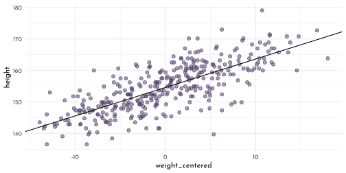
brms_model_hight_mu_interval %>%
ggplot(aes(x = weight_centered)) +
geom_ribbon(data = brms_model_hight_samples_interval,
aes(ymin = PI_lower, ymax = PI_upper), fill = clr0d, alpha = .35) +
geom_point(data = data_adults, aes(y = height), color = rgb(0,0,0,.5), size = .6) +
geom_ribbon(aes(ymin = PI_lower, ymax = PI_upper), fill = clr1, alpha = .35) +
geom_line(aes(y = mean))
brms_c4_curve_x <- brm(data = data_model,
family = gaussian,
height ~ 1 + weight_s + weight_s2,
prior = c(prior(normal(178, 20), class = Intercept),
prior(lognormal(0, 1), class = b, coef = "weight_s"),
prior(normal(0, 1), class = b, coef = "weight_s2"),
prior(uniform(0, 50), class = sigma)),
iter = 30000, warmup = 29000,
chains = 4, cores = 4,
seed = 4,
file = "brms/brms_c4_curve_x")
brms_summary_plot(brms_c4_curve_x, n_chains = 4)
weight_seq <- tibble(weight_s = seq(from = -2.5, to = 2.5, length.out = 30)) %>%
mutate(weight_s2 = weight_s^2)
fitd_quad <- fitted(brms_c4_curve_x,
newdata = weight_seq,
probs = c(.055, .955)) %>%
data.frame() %>%
bind_cols(weight_seq) %>%
as_tibble()
pred_quad <- predict(brms_c4_curve_x,
newdata = weight_seq,
probs = c(.055, .955)) %>%
data.frame() %>%
bind_cols(weight_seq) %>%
as_tibble()
ggplot(data = data_model,
aes(x = weight_s)) +
geom_ribbon(data = pred_quad,
aes(ymin = Q5.5, ymax = Q95.5), fill = clr0d, alpha = .35) +
geom_smooth(data = fitd_quad,
aes(y = Estimate, ymin = Q5.5, ymax = Q95.5),
stat = "identity", color = clr1, fill = fll1, alpha = .35, size = .2) +
geom_point(aes(y = height), color = rgb(0,0,0,.5), size = .6)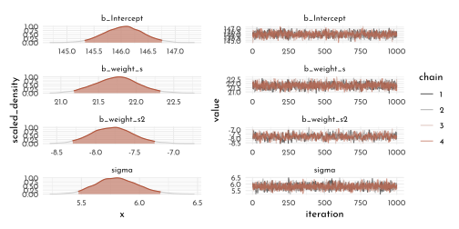
num_knots <- 15
knot_list <- quantile(data_cherry$year, probs = seq(from = 0, to = 1, length.out = num_knots))
B <- bs(data_cherry$year,
knots = knot_list[-c(1, num_knots)],
degree = 3,
intercept = TRUE)
data_cherry_B <- data_cherry %>% mutate(B = B)
data_cherry_B %>% glimpse()#> Rows: 827
#> Columns: 6
#> $ year <int> 812, 815, 831, 851, 853, 864, 866, 869, 889, 891, 892, 894,…
#> $ doy <int> 92, 105, 96, 108, 104, 100, 106, 95, 104, 109, 108, 106, 10…
#> $ temp <dbl> NA, NA, NA, 7.38, NA, 6.42, 6.44, NA, 6.83, 6.98, 7.11, 6.9…
#> $ temp_upper <dbl> NA, NA, NA, 12.10, NA, 8.69, 8.11, NA, 8.48, 8.96, 9.11, 8.…
#> $ temp_lower <dbl> NA, NA, NA, 2.66, NA, 4.14, 4.77, NA, 5.19, 5.00, 5.11, 5.5…
#> $ B <bs[,17]> <bs[26 x 17]>brms_c4_cherry_spline <- brm(data = data_cherry_B,
family = gaussian,
doy ~ 1 + B,
prior = c(prior(normal(100, 10), class = Intercept),
prior(normal(0, 10), class = b),
prior(exponential(1), class = sigma)),
iter = 2000, warmup = 1000, chains = 4, cores = 4,
seed = 4,
file = "brms/brms_c4_cherry_spline")brms_posterior_samples <- as_draws_df(brms_c4_cherry_spline)
years_seq <- tibble(year = seq(from = min(data_cherry$year), to = max(data_cherry$year), by = 10))
fitd_quad <- fitted(brms_c4_cherry_spline,
probs = c(.055, .955)) %>%
data.frame() %>%
bind_cols(data_cherry_B) %>%
as_tibble()
pred_quad <- predict(brms_c4_cherry_spline,
probs = c(.055, .955)) %>%
data.frame() %>%
bind_cols(data_cherry_B) %>%
as_tibble()
ggplot(data = data_cherry,
aes(x = year)) +
geom_vline(data = tibble(year = knot_list), aes(xintercept = year),
linetype = 3, color = rgb(0,0,0,.4)) +
geom_point(aes(y = doy), color = rgb(0,0,0,.5), size = .6) +
geom_ribbon(data = pred_quad,
aes(ymin = Q5.5, ymax = Q95.5), fill = clr0d, alpha = .35) +
geom_smooth(data = fitd_quad,
aes(y = Estimate, ymin = Q5.5, ymax = Q95.5),
stat = "identity", color = clr1, fill = fll1, alpha = .35, size = .2) +
geom_hline(yintercept = fixef(brms_c4_cherry_spline)[1, 1], color = clr1, linetype = 2) +
theme(panel.grid.minor.x = element_blank(),
panel.grid.major.x = element_blank())
get_prior(data = data_cherry,
family = gaussian,
doy ~ 1 + s(year))#> prior class coef group resp dpar nlpar bound
#> (flat) b
#> (flat) b syear_1
#> student_t(3, 105, 5.9) Intercept
#> student_t(3, 0, 5.9) sds
#> student_t(3, 0, 5.9) sds s(year)
#> student_t(3, 0, 5.9) sigma
#> source
#> default
#> (vectorized)
#> default
#> default
#> (vectorized)
#> defaultUsing a thin plate spline
brms_c4_cherry_smooth <- brm(data = data_cherry,
family = gaussian,
doy ~ 1 + s(year),
prior = c(prior(normal(100, 10), class = Intercept),
prior(normal(0, 10), class = b),
prior(student_t(3, 0, 5.9), class = sds),
prior(exponential(1), class = sigma)),
iter = 2000, warmup = 1000,
chains = 4, cores = 4,
seed = 4,
control = list(adapt_delta = .99),
file = "brms/brms_c4_cherry_smooth")fitted(brms_c4_cherry_smooth,
probs = c(.055, .945)) %>%
data.frame() %>%
bind_cols(select(data_cherry, year, doy)) %>%
as_tibble() %>%
ggplot(aes(x = year, y = doy, ymin = Q5.5, ymax = Q94.5)) +
geom_vline(data = tibble(year = knot_list), aes(xintercept = year),
linetype = 3, color = rgb(0,0,0,.4)) +
geom_point(aes(y = doy), color = rgb(0,0,0,.5), size = .6) +
geom_smooth(aes(y = Estimate, ymin = Q5.5, ymax = Q94.5),
stat = "identity", color = clr1, fill = fll1, alpha = .35, size = .2) +
geom_hline(yintercept = fixef(brms_c4_cherry_smooth)[1, 1], color = clr1, linetype = 2) +
labs(subtitle = "brms smooth using s(year) (thin plate)",
y = "day in year") +
theme(panel.grid.minor.x = element_blank(),
panel.grid.major.x = element_blank())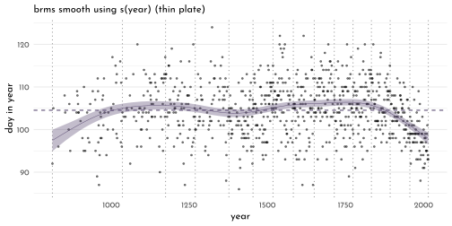
brms_c4_cherry_smooth2 <- brm(data = data_cherry,
family = gaussian,
doy ~ 1 + s(year, bs = "bs", k = 19),
prior = c(prior(normal(100, 10), class = Intercept),
prior(normal(0, 10), class = b),
prior(student_t(3, 0, 5.9), class = sds),
prior(exponential(1), class = sigma)),
iter = 2000, warmup = 1000, chains = 4, cores = 4,
seed = 4,
control = list(adapt_delta = .99),
file = "brms/brms_c4_cherry_smooth2")
fitted(brms_c4_cherry_smooth2,
probs = c(.055, .945)) %>%
data.frame() %>%
bind_cols(select(data_cherry, year, doy)) %>%
as_tibble() %>%
ggplot(aes(x = year, y = doy, ymin = Q5.5, ymax = Q94.5)) +
geom_vline(data = tibble(year = knot_list), aes(xintercept = year),
linetype = 3, color = rgb(0,0,0,.4)) +
geom_point(aes(y = doy), color = rgb(0,0,0,.5), size = .6) +
geom_smooth(aes(y = Estimate, ymin = Q5.5, ymax = Q94.5),
stat = "identity", color = clr1, fill = fll1, alpha = .35, size = .2) +
geom_hline(yintercept = fixef(brms_c4_cherry_smooth2)[1, 1], color = clr1, linetype = 2) +
labs(subtitle = "brms smooth using s(year) (B-spline)",
y = "day in year") +
theme(panel.grid.minor.x = element_blank(),
panel.grid.major.x = element_blank())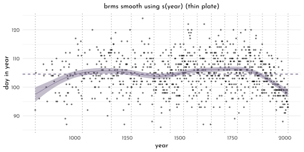
Add-on about matrix-columns (4.7 Second bonus)
n <- 100
# how many continuous x predictor variables would you like?
k <- 10
# simulate a dichotomous dummy variable for z
# simulate an n by k array for X
set.seed(4)
data_matrix_columns <- tibble(z = sample(0:1, size = n, replace = T),
X = array(runif(n * k, min = 0, max = 1), dim = c(n, k)))
# set the data-generating parameter values
a <- 1
theta <- 5
b <- 1:k
sigma <- 2
# simulate the criterion
data_matrix_columns <- data_matrix_columns %>%
mutate(y = as.vector(a + X %*% b + theta * z + rnorm(n, mean = 0, sd = sigma)))
# data_matrix_columns %>% glimpse()
# data_matrix_columns$X[1,]
brms_c4_matrix_column <- brm(data = data_matrix_columns,
family = gaussian,
y ~ 1 + z + X,
prior = c(prior(normal(0, 2), class = Intercept),
prior(normal(0, 10), class = b),
prior(exponential(1), class = sigma)),
iter = 2000, warmup = 1000, chains = 4, cores = 4,
seed = 4,
file = "brms/brms_c4_matrix_column")
summary(brms_c4_matrix_column)#> Family: gaussian
#> Links: mu = identity; sigma = identity
#> Formula: y ~ 1 + z + X
#> Data: data_matrix_columns (Number of observations: 100)
#> Draws: 4 chains, each with iter = 2000; warmup = 1000; thin = 1;
#> total post-warmup draws = 4000
#>
#> Population-Level Effects:
#> Estimate Est.Error l-95% CI u-95% CI Rhat Bulk_ESS Tail_ESS
#> Intercept 0.95 1.19 -1.47 3.34 1.00 6928 3291
#> z 4.74 0.42 3.91 5.56 1.00 7389 3032
#> X1 0.57 0.75 -0.86 2.04 1.00 6798 3312
#> X2 0.90 0.69 -0.47 2.26 1.00 6421 2949
#> X3 3.41 0.75 1.96 4.90 1.00 7375 3214
#> X4 2.81 0.73 1.36 4.25 1.00 6712 3469
#> X5 5.74 0.72 4.32 7.12 1.00 6621 3588
#> X6 6.40 0.73 4.97 7.82 1.00 6552 3228
#> X7 8.49 0.73 7.06 9.90 1.00 7098 3335
#> X8 8.40 0.69 7.04 9.76 1.00 8718 3363
#> X9 8.82 0.81 7.27 10.39 1.00 8378 3273
#> X10 9.32 0.73 7.88 10.78 1.00 8260 2894
#>
#> Family Specific Parameters:
#> Estimate Est.Error l-95% CI u-95% CI Rhat Bulk_ESS Tail_ESS
#> sigma 1.99 0.16 1.71 2.32 1.00 5722 3433
#>
#> Draws were sampled using sampling(NUTS). For each parameter, Bulk_ESS
#> and Tail_ESS are effective sample size measures, and Rhat is the potential
#> scale reduction factor on split chains (at convergence, Rhat = 1).